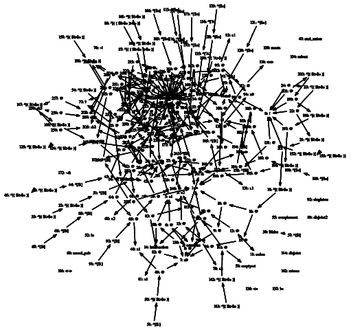
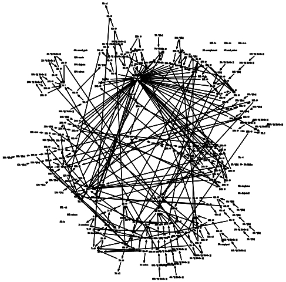

(Index) Art with LEO-II
To our surprise, LEO-II turned out to be an artist, so we decided to showcase some of its work here. So far, LEO-II is mainly working on visual interpretations of the meaning of logic. The artistic work was created in a lively cooperation with another robot artist named twopi (which can be downloaded at www.graphviz.org).
The images you see here visualize LEO-II's proof state, or more accurately, the graph that represents the shared version of all terms in the current proof state.


Since we liked LEO-II's talent as a graphic designer, we decided to take it a little further on the visual side of our work, and introduced our prover to the art of video animation. The animations you see here were created from sequences of snapshots of LEO-II's state, so you can see the evolution of its term base during proof search.
UdS Leo-II remix from Tenzing Mike on Vimeo.
SET076+1 from Tenzing Mike on Vimeo.
Knights+Knaves_6 from Tenzing Mike on Vimeo.
SET609+3 from Tenzing Mike on Vimeo.
SIMPLE-MATHS-10 from Tenzing Mike on Vimeo.